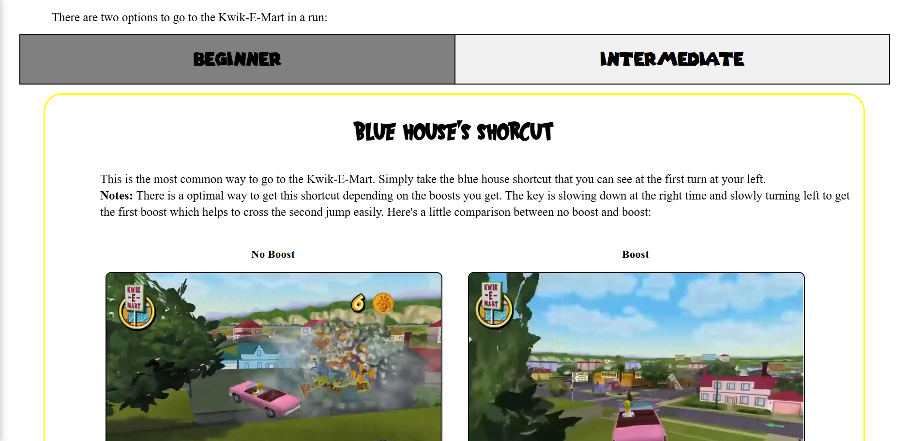

🯠Objectif du projet
Créer un site complet pour comparer mes temps de jeux vidéos au meilleurs joueurs du monde en utilisant l'API de speedrun.com et un bloc notes personnel pour chaque jeu.
⚙️ Technologies utilisées
- HTML5 (structure du site)
- CSS3 (interface)
- JavaScript (logique de de navigation, récupération de données d'api)
📸 Aperçu


💡 Ce que j’ai appris
Ce projet m’a permis de renforcer ma logique JavaScript, d’apprendre à utiliser une api et à structurer ces résultats pour les afficher correctement à l'utilisateur.